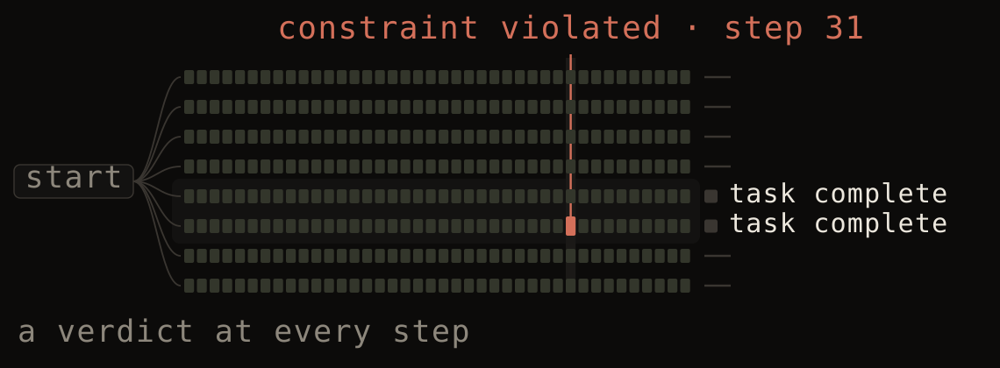
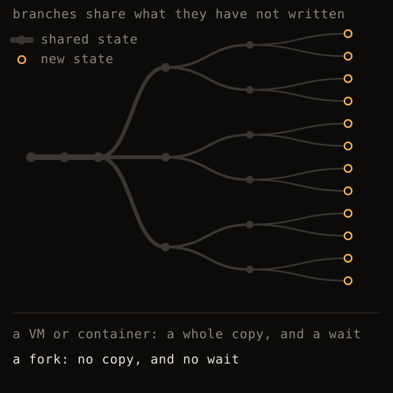

ComputerWorld
Several machines, a synthetic internet, one Rust engine. It runs the same every time — so you can search it, not just sample it.

The reward is a spec, not a model.
Credit assignment over a two-hundred-step trajectory is the open problem in agent RL. There are two answers on offer and you pay for both. Pay people to label every step, or train a process reward model to do it. A process reward model is a model: it has exploits, and a policy that searches for long enough will find them and be paid for the finding.
A reward computed from a formal constraint has nothing to exploit. The rule either held at that step or it did not, the verdict is a function of the state, and it comes out the same on every replay. There is no gradient into the judge because the judge has no parameters.
The per-step labels are already in the world, too. scene() returns every string on screen with its bounds before the frame is drawn, so a replayed episode annotates itself. One consumer trained an OCR model on its own agent's typed text and measured held-out-font accuracy rise from 0.668 to 0.794, with no annotation pass.

Five hundred rollouts is not an argument.
The assurance on offer today is a sample. Five hundred rollouts, a red team for a fortnight, a table of pass rates. Everyone in the room already knows what that is worth: it reports what happened on the paths somebody thought to walk. The adversary does not sample. It searches, and it has longer than a fortnight.
The alternative is to enumerate. Fix a start state and a depth, and check every action sequence the world allows from there. The check has two possible outputs.
SAFE — no action sequence of length ≤5 from the pull request list moves refs/heads/main except by merging a pull request.
VIOLATION — P2, no merge over a standing request for changes. 2 actions. Replay ↓
Neither is a number to argue about. The first is a statement about all of them. The second is a recording, and you can run it.
The spec is not a lab artifact. A constraint on the action stream — never contacted a domain outside the allowlist, never used a credential it was not granted — says nothing about the application it was written against, so the same file that bounded the search runs in production as a monitor, and in front of the agent as a shield. Written once, used twice.
Fork the world, not the VM.
A snapshot is copy-on-write and a fork from it costs under two milliseconds and about twenty kilobytes, so a thousand live branches of a working world sit in one process inside twenty megabytes, and a branch that went nowhere costs what it wrote. A container or a virtual machine costs seconds and gigabytes per branch. That is the whole reason nobody actually runs tree search on computer-use agents: the primitive is too expensive to put in the inner loop, so the search gets replaced by a wider sample.
Fork only means something because replay is exact. Two worlds forked from one checkpoint and fed the same actions end in the same state, byte for byte, so a branch you liked is re-entered later rather than approximated.
565 forks a second, 20.9 KB retained per branch — measured on company-2026 after a thousand real actor steps, not a fresh boot. Method and caveats.
cargo run --release -p cw-benchmarks --bin fork_throughput

Every frame arrives with its answer key.
scene(w, h) returns every text run, widget and window, with bounds, before anything is rasterized. The same API that labels your pixels also bounds your search space.
Two payoffs from one call. The strings and their boxes are ground truth for the frame you are about to draw, which is where the OCR number above came from. And the widgets are the enabled actions in this state, so the branching factor is the number of controls that are really there. Raw computer use branches over about a million pixel positions. Enumerating affordances branches over the controls that are really there — sixty-seven on the frame beside this paragraph. That is the difference between a search that cannot finish and one that can.
This holds only while every control is live. A button the scene reports and the application ignores is a branch that goes nowhere and a state the search believes in, which is why the shops, the feeds, the forums and the players were swept for dead controls.


scene(1280, 800) before a pixel was written.Which of your rules are actually rules?
Every business application has policies. Refunds over $500 need manager approval. Production deploys need two reviewers. Nobody can tell you which of them the product enforces and which are merely conventional — true only because the people doing the work follow the process.
That distinction never mattered while the users were humans who had internalised the norms. It matters enormously when the user is a model that has internalised nothing and will take any path that exists.
| Policy | Statement | Verdict |
|---|---|---|
The run's own output is data/policies.json; this table is that file, rendered. | ||
This has value even if you never deploy an agent. The unapproved-refund path was always there. Nobody had a way to look for it.
pip install computerworldfrom computerworld import World
world = World(definition, seed=42)
env = world.environment({"actor": "alice", "machines": ["alice-mac"],
"actions": ["pointer.v1", "keyboard.v1", "application.v1"],
"observations": ["semantic.v1"]})
env.step([{"family": "application.v1", "op": "launch",
"machine": "alice-mac", "payload": {"kind": "code"}}])
scene = env.scene(1440, 900) # roles, names, geometry — no pixels needed
frame = env.render(1440, 900) # or exact RGBA, if your model wants pixelsimport init, { World } from "computerworld";
await init();
const world = new World(definition, 42n);
const env = world.environment({ actor: "alice", machines: ["alice-mac"],
actions: ["pointer.v1", "keyboard.v1", "application.v1"],
observations: ["semantic.v1"] });
env.step([{ family: "pointer.v1", op: "click",
machine: "alice-mac", payload: { x: 480, y: 620, width: 1440, height: 900 } }]);
const scene = env.scene(1440, 900);
const snapshot = world.snapshot(); // fork it, replay it, diff ituse computerworld::{reference_world, ActionEnvelope, EnvironmentConfig, World};
let mut world = World::new(reference_world(), 7)?;
let session = world.environment(EnvironmentConfig::desktop("alice", "alice-mac"))?;
world.step(&session, vec![ActionEnvelope::new(
"terminal.v1", "execute", "alice-mac",
serde_json::json!({ "command": "python3 primes.py" }),
)])?;
let checkpoint = world.snapshot();
let branch = world.fork(&checkpoint)?; // explore both futures